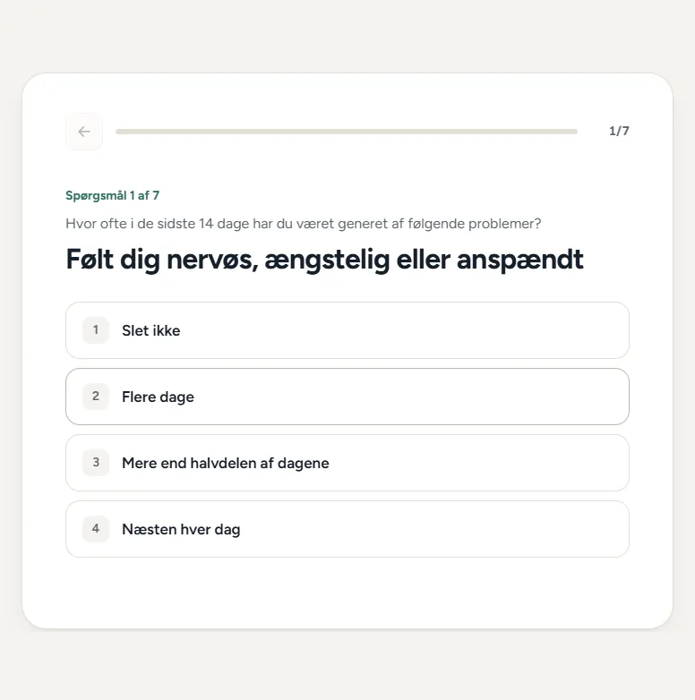
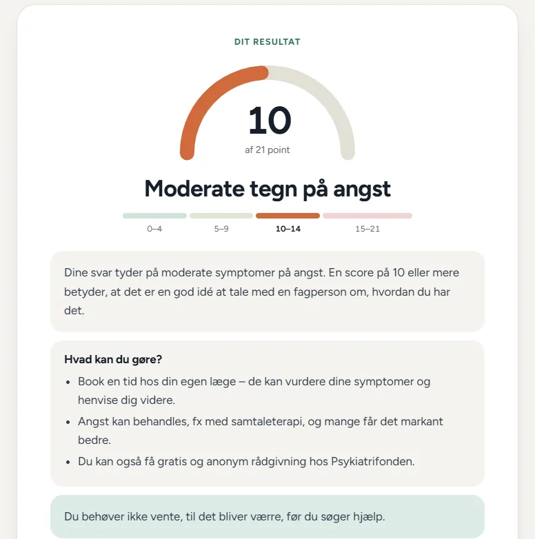
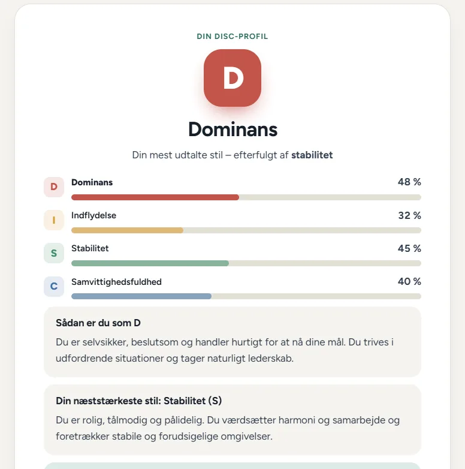
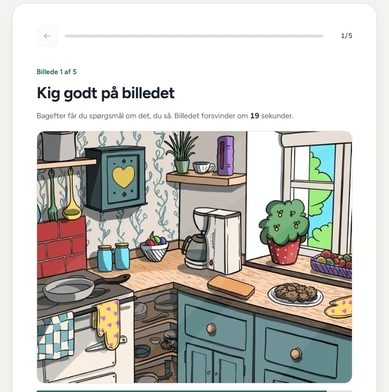
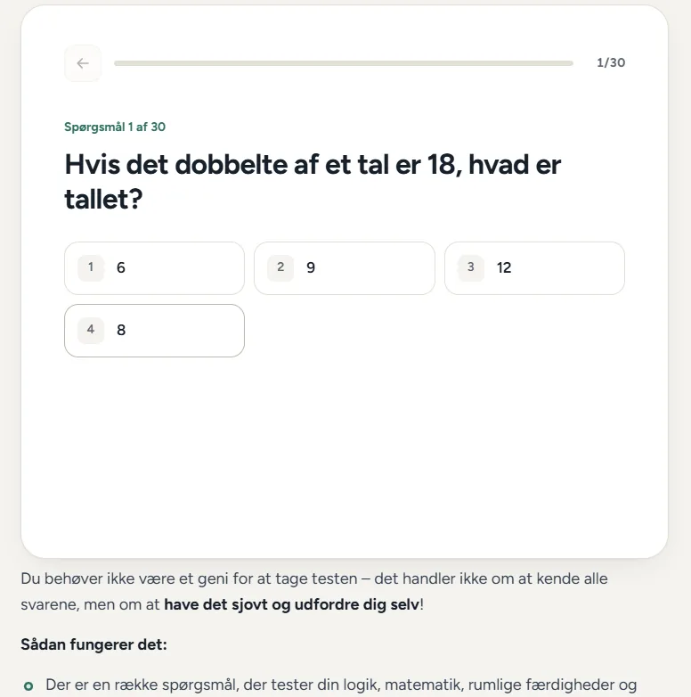

Tres conceptos jugables antes de elegir
Armé un prototipo con tres experiencias que se podían probar: calma nórdica, formato de chat y tarjetas tipo historias. Se eligió la primera, «Nordisk ro»: sobria, clara y apropiada para temas de salud.
Un sitio de tests psicológicos y de habilidades que tuvo usuarios reales en Dinamarca. Lo convertí en una experiencia tipo app: una pregunta por pantalla, resultados claros y un criterio responsable en temas de salud.
Los tests funcionaban y la gente los completaba, pero se veían como un formulario dentro de una página de texto: instrucciones largas con emojis, todas las preguntas juntas y el aspecto de un plugin genérico.
Además, el tema era delicado. Varios tests tratan sobre salud mental, y algunos resultados sonaban a diagnóstico. El objetivo: que hacer un test se sienta como usar una app, sin dejar de ser responsable con lo que se le dice a la persona.
/test/<nombre>/ que había que conservar.Trabajé solo, con Claude Code como asistente de programación. Las decisiones, el diseño y la revisión de cada etapa fueron míos.
Armé un prototipo con tres experiencias que se podían probar: calma nórdica, formato de chat y tarjetas tipo historias. Se eligió la primera, «Nordisk ro»: sobria, clara y apropiada para temas de salud.
El tema lee las tablas del plugin y arma un JSON por test. Las preguntas no se reescribieron ni se migraron: el motor nuevo usa lo que ya estaba.
DescartéSeguir con la presentación del plugin: no permitía la experiencia de una pregunta por pantalla.
El mismo código resuelve escalas clínicas, el perfil DISC y tests con respuestas correctas, con preguntas de opción, escritas o sobre imágenes.
Cada página trae su test embebido. Así el sitio funciona como HTML estático, sin servidor ni archivos extra.
Títulos, descripciones, Open Graph en danés, datos estructurados (sitio, página, migas y lista de tests) y el sitemap nativo de WordPress. Las migas visibles coinciden con las de los datos estructurados.
Respuestas con las teclas 1 a 9, botón para volver, progreso guardado si se recarga la página y animaciones que respetan la opción «reducir movimiento».
Capturas del sitio en vivo.

Una pregunta por pantalla, con progreso y opciones numeradas para el teclado

Resultado clínico: medidor, rango y qué hacer. Nunca un diagnóstico

Perfil DISC: estilo dominante, secundario y barras por dimensión

Memoria: la imagen se ve 20 segundos y después llegan las preguntas

Inteligencia: preguntas con imagen y respuesta escrita
Uso real del último año: 577 tests de 389 personas.
La sección «Más populares» de la portada muestra esos cuatro tests, en ese orden. Lo que se destaca sale de los datos, no de una intuición.
Algunos resultados de salud mental sonaban a diagnóstico.
Titulares del tipo «pocas, algunas o muchas señales de…» y un aviso claro: el test es una herramienta para reflexionar, no un diagnóstico.
Quien recibe un resultado alto puede necesitar ayuda.
Cada test de salud mental termina con líneas de ayuda reales de Dinamarca (emergencias, Livslinien y Psykiatrifonden), con sus horarios verificados.
El test de ansiedad estaba basado en una escala con derechos de autor.
Lo reemplacé por el GAD-7 oficial en danés, de uso libre, con sus rangos estándar y crédito a los autores.
Los cinco tests de idiomas no tenían texto de resultado.
Escribí cuatro niveles basados en el marco europeo (de A1 a B2 o más), con consejos para cada uno.
El sitio se monetizaba con anuncios.
Los espacios de anuncio van debajo del test, nunca entre preguntas: la experiencia no se corta.
Arrastrá cada captura para comparar.


Portada: los tests más usados primero


Un test: introducción breve y botón para empezar


DISC: de un formulario largo a una afirmación por pantalla


El mismo test en celular
Lighthouse de la portada en vivo
Tests, calculadoras, cotizadores o formularios por pasos que la gente quiera completar.